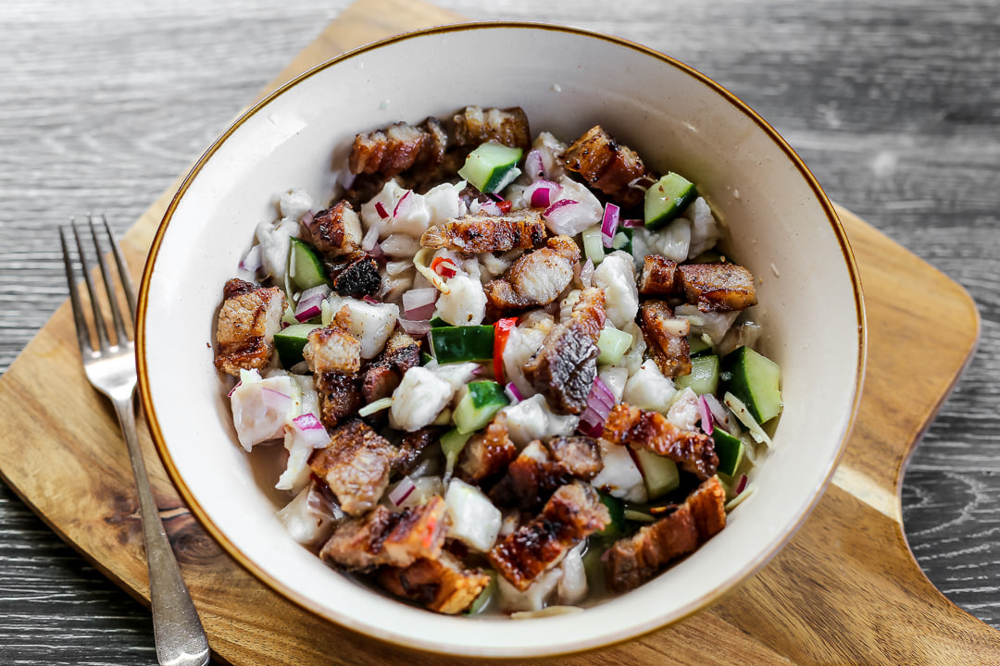

Mindanao
Sinuglaw
Originating from Davao and Northern Mindanao (particularly Cagayan de Oro), Sinuglaw is a brilliant culinary mash-up of two beloved Filipino dishes: Sinugba (grilled pork belly) and Kinilaw (raw fish ceviche). The smoky, fatty richness of the grilled pork perfectly balances the sharp, acidic, and fresh flavors of the fish cured in vinegar. It is a staple appetizer (pulutan) and a favorite during beach outings and festive gatherings.

Gather
Ingredients
- Fresh Tuna or Tangigue (Spanish Mackerel) fillet, cubed
- Grilled pork belly (liempo), chopped into bite-sized pieces
- Coconut vinegar or cane vinegar
- Red onions, thinly sliced
- Ginger, minced
- Cucumber, seeded and diced
- Bird's eye chilies (siling labuyo) and finger chilies (siling haba), chopped
- Calamansi juice
- Salt and pepper
- Tabon-tabon fruit extract (traditional in CDO, optional but highly recommended if available)
Make it
Recipe
- Prepare the grilled pork belly first: marinate in soy sauce and calamansi, grill until slightly charred and cooked through, then chop and set aside to cool slightly.
- Wash the cubed fresh fish briefly in a little vinegar, then drain and discard the liquid.
- In a non-reactive bowl (glass or ceramic), combine the raw fish, onions, ginger, cucumber, and chilies.
- If you have tabon-tabon extract (which neutralizes fishiness and prevents stomach upset), mix it in now.
- Season with salt, pepper, and calamansi juice.
- Pour in enough coconut vinegar to coat the ingredients. Toss gently until the fish turns slightly opaque.
- Immediately fold in the chopped grilled pork belly.
- Serve immediately. Do not let it sit for too long, as the acid will overcook the fish.